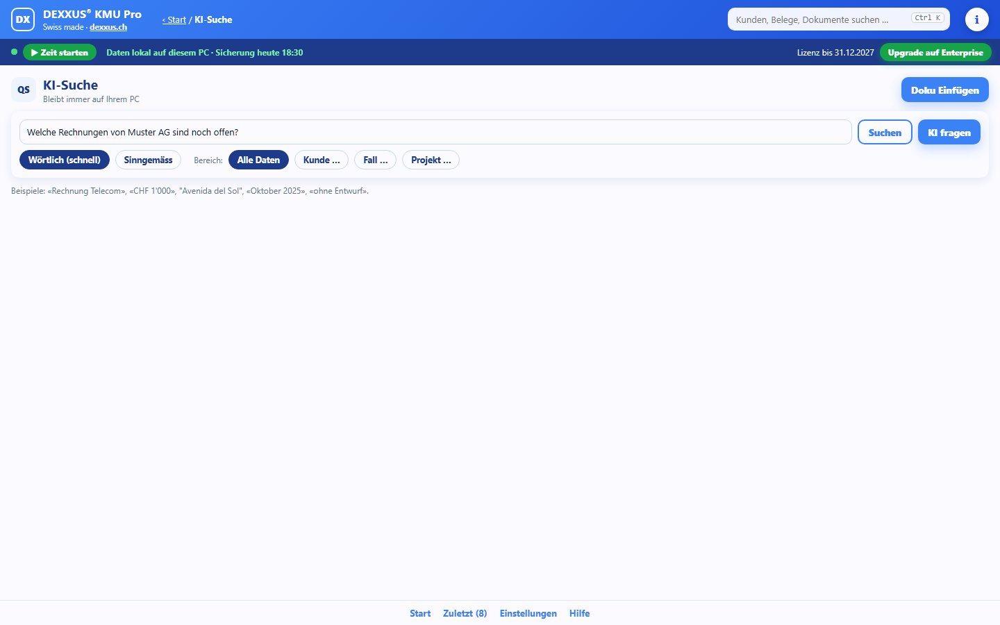
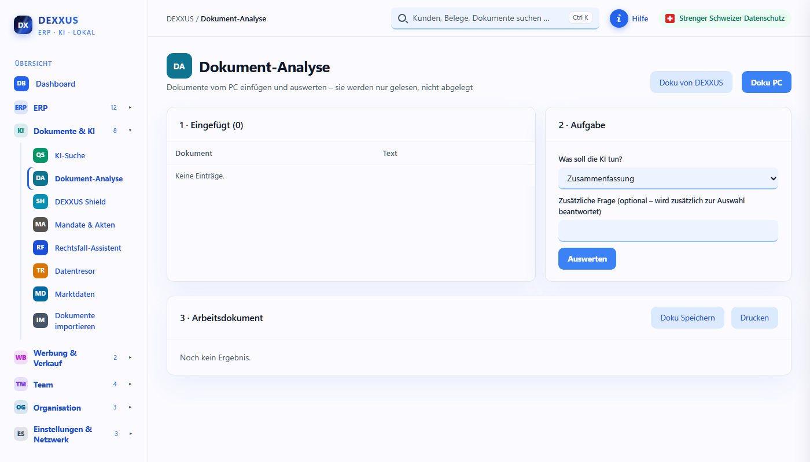
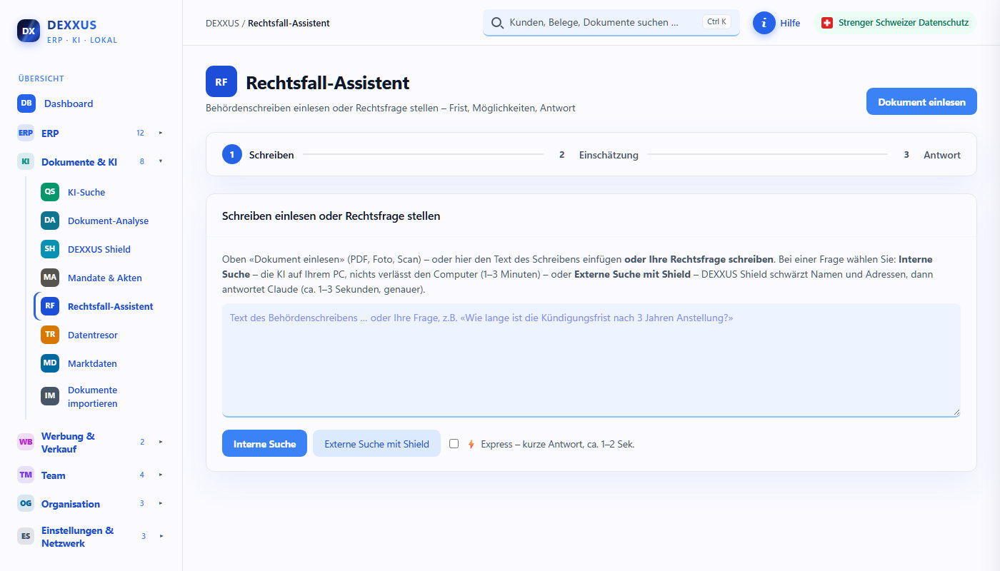
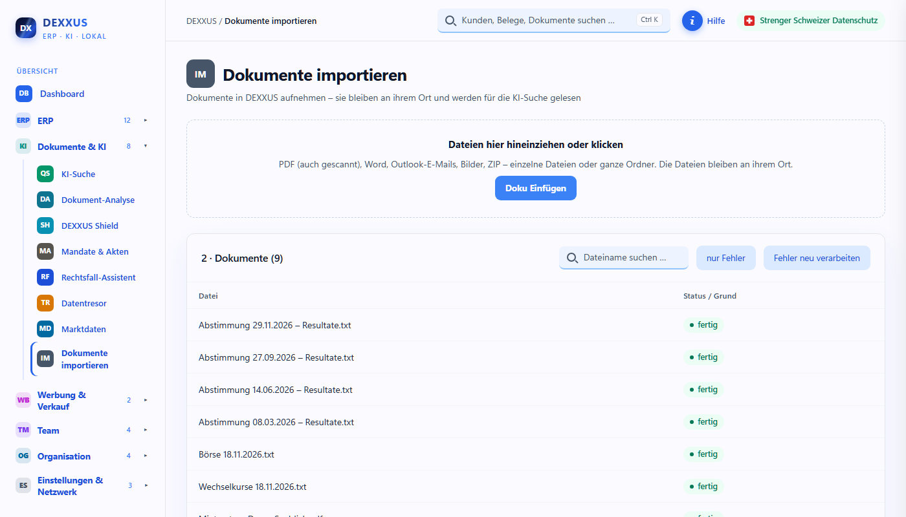
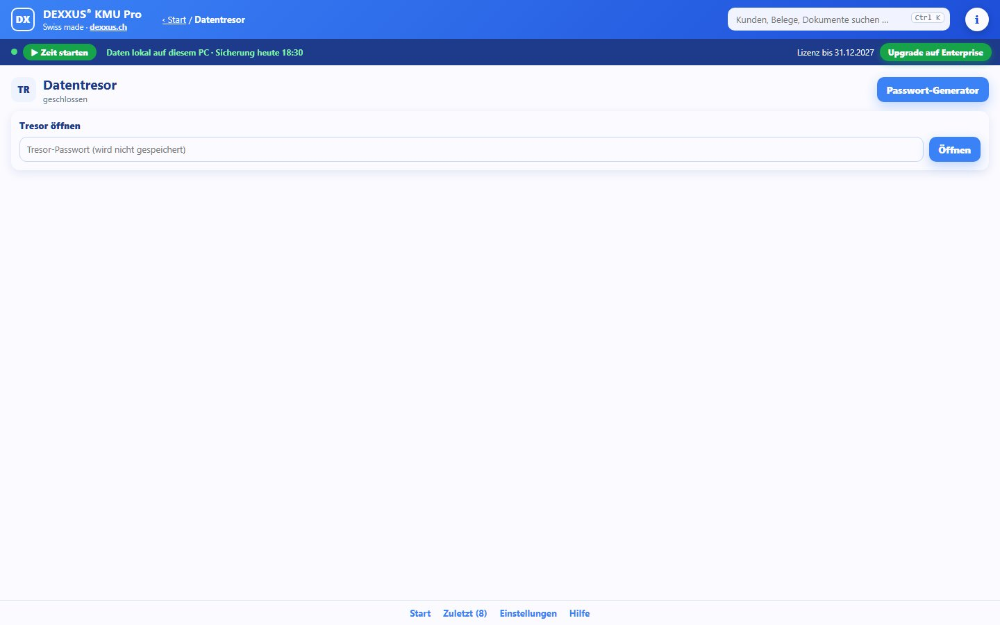
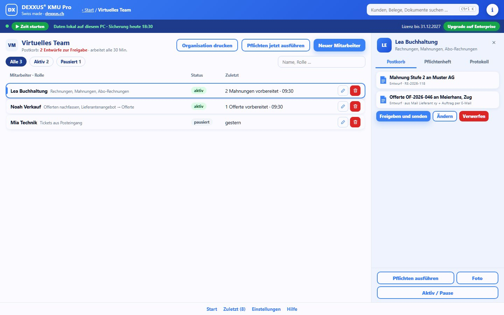

Funktionen von DEXXUS
KI, die Ihre Dokumente kennt – und trotzdem nichts ins Internet schickt. Wählen Sie eine Funktion: Sie sehen die echte Ansicht aus DEXXUS (Musterdaten).
KI-Suche
Fragen Sie Ihre eigenen Dokumente – die KI antwortet lokal.
Tippen Sie eine Frage wie «Welche Verträge laufen 2027 aus?» – DEXXUS durchsucht PDFs, Scans, Word-Dateien und E-Mails und antwortet in ganzen Sätzen mit Quellenangabe. Die KI läuft auf Ihrem PC: Nichts geht ins Internet.
- Antworten aus Ihren eigenen Dokumenten – mit Quelle
- PDFs, Scans (Texterkennung), Word und E-Mails
- Suchbereich wählbar: alle Daten, ein Kunde, ein Ordner
- 100 % lokal – keine Cloud, kein Datenabfluss

Dokument-Analyse
Dokumente auswerten, zusammenfassen, vergleichen.
Fügen Sie Verträge, Offerten oder Berichte ein und wählen Sie die Aufgabe: Zusammenfassung, Risiken, Fristen, Vergleich oder eine eigene Frage. Das Ergebnis erscheint als Arbeitsdokument – zum Speichern oder Drucken.
- Zusammenfassung, Risiken, Fristen oder eigene Frage
- Mehrere Dokumente auf einmal auswerten
- Ergebnis als Arbeitsdokument speichern oder drucken
- Dokumente werden nur gelesen, nicht abgelegt

Rechtsfall-Assistent
Behördenschreiben verstehen – Frist, Möglichkeiten, Antwort.
Lesen Sie ein Schreiben vom Amt, Gericht oder einer Versicherung ein – als PDF, Foto oder Scan. DEXXUS erkennt die Art des Schreibens, berechnet die Frist, zeigt Ihre Möglichkeiten und entwirft die Antwort mit den passenden Gesetzesartikeln.
- Über 100 Arten von Behördenschreiben erkannt
- Frist automatisch berechnet und als Aufgabe eingetragen
- Antwortbrief mit Bezug auf Schweizer Gesetze
- Interne Suche lokal oder externe Suche geschützt mit Shield

Dokumente importieren
Ihre Ablage wird durchsuchbar – ohne Umzug.
Ziehen Sie Dateien oder ganze Ordner in DEXXUS: PDF (auch gescannt), Word, Outlook-E-Mails, Bilder und ZIP. Die Dateien bleiben an ihrem Ort – DEXXUS liest sie für die KI-Suche und zeigt den Stand jeder Datei.
- Dateien und ganze Ordner per Hineinziehen
- Texterkennung für Scans und Fotos
- Dateien bleiben an ihrem Ort – nichts wird verschoben
- Status je Datei, Fehler neu verarbeiten

Datentresor
Ausweise, Verträge, Passwörter – sicher verschlossen.
Der Datentresor verschlüsselt Ihre heikelsten Dokumente mit AES-256 direkt auf Ihrer Festplatte. Ohne Ihr Passwort kommt niemand an die Inhalte – auch nicht bei einem Diebstahl des PCs.
- AES-256-Verschlüsselung auf Ihrer Festplatte
- Gesperrt, bis Sie das Passwort eingeben
- Für Ausweise, Verträge, Zugangsdaten
- Keine Cloud – die Daten verlassen den PC nie

Virtuelles Team
Software-Assistenten erledigen die Routinearbeit.
Geben Sie Ihren virtuellen Mitarbeitenden Rollen und Pflichten: Rechnungen und Mahnungen vorbereiten, Offerten nachfassen, den Posteingang sortieren, Rapporte schreiben. Alles, was nach aussen geht, bleibt ein Entwurf im Postkorb, bis Sie freigeben.
- Rollen und Pflichtenheft je Mitarbeiter
- Mahnungen, Abo-Rechnungen, Nachfassen, Rapporte
- Postkorb: nichts geht ohne Ihre Freigabe hinaus
- Täglicher Rapport per E-Mail
